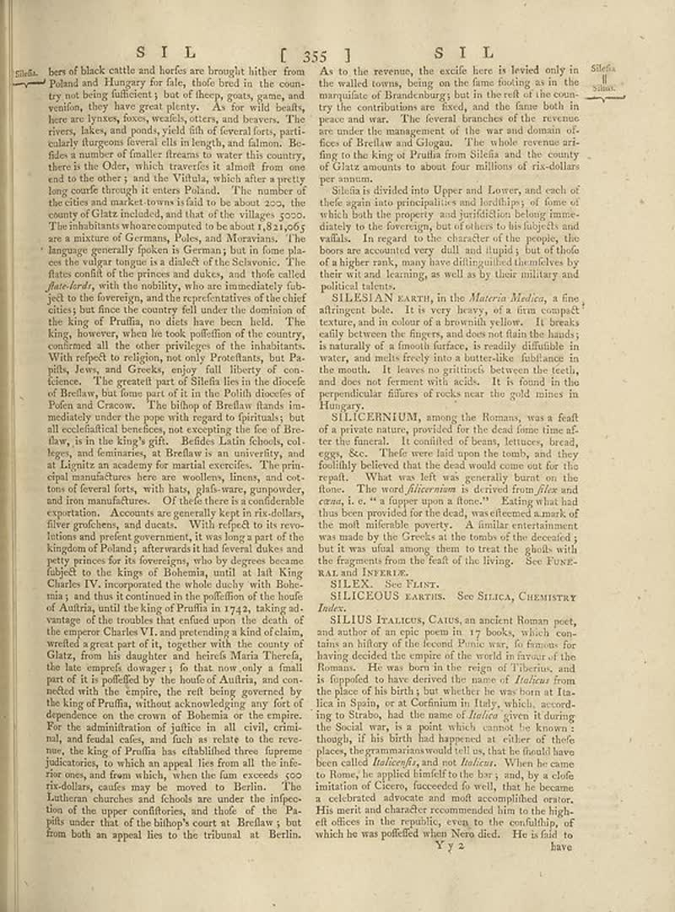

page-2001-93040a5ab362.jpg

Page ID: britannica:309f765b1ecc83e0a7f7762e44b4a927a7555443:train:2001
Running head: S I L [ 355 ]
Image SHA-256: 93040a5ab3625efc0259c9878caea3e2285bc73aae0c1fda452f9f5198dedd67

(untitled) [?]
bers of black cattle and herbs are brought bitter from Poland and Hungary for fale, thofe bred in the country not being sufficient; but of theory, goats, arms, and vention, they have great plenty. As in wild deaths, here are lyxes, foxes, weafels, otters, and beravers. The river, lakes, and ponds, yield dish of several flots, part celuity ifgureo fevers all its length, and almond. Besides a number of smaller fireams to water this country, there is the Oder, which travels is almost from one end to the other; and the Yitha, which after a sweetly long coffe through it enters Poland. The number of the cities and market towns is fall to be about 202, that county of Ghats included, and the of the villages 2020. The inhabitants whoare computed to be about 1,821,665 are a mixture of German, Poles, and Moravians. The language generally fascism is Germany, but in Rome goes the volgar tongue is a dialect of the Schavonic. The flatts could of the prices are dukes, and then called _plus-shot_ with the mobility, who are immediately flat yet to the foreignet, and the reportivatives of the chief critics, but these the country fell under the domination on the king of Praffin, no does have been held. The king, however, when he took poffition of the country, contained all the other privileges of the inhabitants. With respect to religious, not only Parachants, but Pa- pits, Jews, and Greeks, enjoy full liberty of confidence. The general part of Sfislio lies in the direction of Belawy, but from part of it in the Polish number of Poen and Crewow. The bilthop of Brelaw funds immediately under the pops with regard to fighting, but at ecfetifical benehse, not accepting the fee of Breslaw, is in the king’s gift. Beddes Latin Schools, colleges, and denimarsa, at Bedford is an university, and at Liguria as readers by our martial exercise. The principal manufactures here are woollen, linens, and cotone of feverf lists, with habe, girls wereang, gourponder, and ilov manufacture. Of these here is a considerable exportation. Accounts are generally kept in six dollars, five großcies, and dead. With effect to its own littions and protect government, it has easy part of the kingdom of Poland; afterwards it had several dukes and petty prices for its foregoing vably obey degrees became falsely to the Kings of Bohemia, until its left King Charles IV, incorporated the whole duchy with Bolsonia, and thus it continued in the payoffline of the house of Austria, until bloody of Praffin in 742, taking advantage of the troubles that refined upon the death of the emperor Charlie VI, and precluding a kind of chains, worked is great part of it, together with the country of Glatz, from his daughter and heirrels Maria Thereda, the late emped, doways; it do now only a final part of it is poefficby the hour of Aufträ, and con-nected with the empire, the refit being governed by the king of Praffin, without acknowledging any fact of dependence on the crown of Bohemian or the entire. For the administration of justice, all civil, criminal, and fecal cies, and each as relate to the revue, the king of Praffin has ethibilhed three lipeme juiciatories, to which an appeal lies from all the infine case, and few which, when the fam exceeds 200 ricdollars, outles may moved to Berlin. The Lutheran churches and schools are under the inferiorities of the upper confliters, and chloef of the Pa- pills under that of the kidney's court to Breldw; but from both an appeal lies to the tribunal at Berlin. As to the revenue, the excife here in levied only in the walled towns, being on the fame footing as in the mmunific of Brandenburg; but in the rest of the coun-try the contributions are fixed, and the time both in peace and var. The several branches of the revenues are under the management of the war and domain offices of Berlher and Clugas. The whole revenue arling to the king of Praffia from Sfislio and the country of Glatz amounts to about four millions of rix-dollars per season. Sliela is divided into Upper and Lower, and each of their again into principalities and localities; of some of which both the property and justifiable belong, purity diately to the foreigners, but of others to his subjects and walks. In regard to the character of the employ the bears are accurate very dull and lupid; but of thofo of a higher rank, many have dilinguished themselves by their virtual learning, as well as by their military and political talents.
SILLESIAN EARTH [Text]
SILLESIAN EARTH, in the _Materia Medice_, a fine affungent bole. It is very heavy, of a firm compel tantras, and in colors of the brownie yellow. It breaks early between the fingers, and does not flash the hands; is naturally a smooth before, is readily available in water, and multis freely into a butterflies, lightable in the mouth. It leaves no grittiness between the teeth, and does not ferment with acids. It is found in the perpendicular letters of rocks across the gold mines in Hungary.
SILICERNIUM [Text]
SILICERNIUM, among the Romanus was a fault of a private nature, provided for the Great line time after the funeral. It confited of beans, lettues, bread, eggs, &co. Their eyes laid upon the tomb, and they possibly believed that the died would come out of the repair. What was left was generally burnt on the floor. The word _Alternate_ as derived from _Place and_ crear, i. e. of figure upon a fleece . Eating what had thus been provided for the dead, was effecemed amark of the small minerible powder. A similar entertainment was made by the Greek sit in the tender of the seaside; but it was ufalal among them to treat the globils with the fragments from the feat of the living. See FUNFAL AND INTERLE.
SILEX [Text]
SILEX. See FlANT.
Matched article: Silex (Wikipedia, revision 1277847082, re-rank score -2.462890625) · comparison
SILICEOUS EARTHIS [Text]
SILICEOUS EARTHIS. See SILICA, CHEMITRY _Index._
Matched article: Siliceous rock (Wikipedia, revision 1166615995, re-rank score -4.7265625) · comparison
SILLIUS TALIOLOS [Text]
SILLIUS TALIOLOS, CAUS, an ancient Roman poet, and author of an epic poem in 17 books, which con-tains an hilloy of the second Ponte was, to famous for having decided the empire of the world in favour of the Romanes. He was born in the reign of Thierius, and is fogoped to have derived the name of _Italica_ from the place of his birth; but whether he was born at Italica in Spain, or at Cerdinam in Italy, which, according to Scheba, had the name of _Italica_ given it during the Social war, is a point which cannot be known: though, it is his first had happened at either of those places, the grammarina would tell us, that he found have been called _Italicaeta_, and wol _Italica_. When he came to Rome, he applied himself to the bay; and, by a choi institution of Greece, succeeded fo well, like he became a celebrated advocate and molt accomplished senior. His sacred, and charader recommended him to the high- ethnics in the republic, even to the confidity, of which he was poffied when Nono died. He is field to Yγ2
Matched article: Silius Italicus (Wikipedia, revision 1353828824, re-rank score -4.95703125) · comparison
OCR issues
No OCR issues recorded for this page.